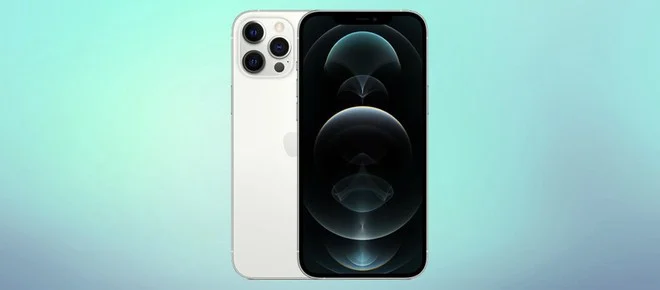

Lançamento do Smartphone XYZ Pro com Tecnologia Revolucionária de Câmera
postado em 11 de maio de 2023
A empresa ABC anunciou hoje o lançamento do seu mais recente smartphone, o XYZ Pro. O destaque deste novo dispositivo é a sua tecnologia revolucionária de câmera, que promete elevar a qualidade das fotos e vídeos capturados pelos usuários. A empresa ABC anunciou hoje o lançamento do seu mais recente smartphone, o XYZ Pro. O destaque deste novo dispositivo é a sua tecnologia revolucionária de câmera, que promete elevar a qualidade das fotos e vídeos capturados pelos usuários.
leia maisRumores Apontam para o Lançamento do Smartphone ABC Max: Novo Padrão de Inovação
postado em 11 de maio de 2023A indústria de smartphones está agitada com os recentes rumores sobre o lançamento do aguardado Smartphone ABC Max. Fontes confiáveis sugerem que a empresa ABC está preparando um dispositivo que promete estabelecer um novo padrão de inovação e funcionalidades.
leia maisSmartphones mais vendidos no mundo em 2022
Última atualização: 11 de maio de 2023- Apple iPhone 13
- Apple iPhone 13 Pro Max
- Apple iPhone 14 Pro Max
- Samsung Galaxy A13
- Apple iPhone 13 Pro
- Apple iPhone 12
- Apple iPhone 14
- Apple iPhone 14 Pro
- Apple iPhone SE 2022
- Samsung Galaxy A03
Smartphones em alta
Última atualização: 11 de maio de 2023Galaxy S22 Ultra
Mais avançado da família de 2022 da Samsung, o Galaxy S22 Ultra sinalizou o fim da família Galaxy Note ao finalmente integrar a caneta S-Pen em seu projeto, acompanhando os moldes visto até então na sua segunda linha avançada e focada em produtividade. leia mais
Apple iPhone 12 Pro Max
O Galaxy S21 Ultra realmente é um celular bastante completo, mas o Android vem sofrendo para acompanhar o iOS em velocidade e fluidez. Se você busca o celular mais ágil do momento, então é o iPhone 12 Pro Max que deve comprar. Ele não fica atrás do rival em câmeras e também tem boa bateria — só não espere carga para mais de um dia, como temos no rival coreano. leia mais
Última atualização do site: 11 de maio de 2023